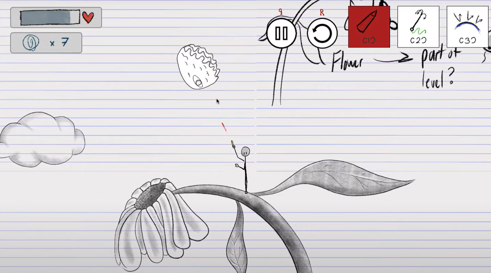

Sticky's Situation
Sticky's Situation is a 2D active ragdoll platformer game. I made this game as the final project for the
Carnegie Mellon National High School Game Academy Precollege Summer program


Development Time: 2 weeks Team Size: 5 Game Engine: Unity
My Involvement
- Role: Programmer
- Things I did:
- - Implemented player movement
- - Implemented player abilities (shoot, grapple, shield)
- - Implemented dialogue system within the game
- - Designed/implemented main menu and level selection screen
- - Implemented final boss
Retrospective
- Overall, the project was completed successfully, even if the game itself wasn’t entirely polished; it was silly, fun to play, and well received by those who tried it.
- Several areas needed improvement. The intended active ragdoll movement was too floppy, often causing glitches like the player’s feet getting stuck in walls; the grappling hook was overly stiff and jittery; and the user interface appeared warped due to limited testing across different window sizes. The story, delivered through text dialogue, felt disconnected from gameplay and lacked immersion, making the narrative difficult to follow.
- Despite working entirely remotely due to the Covid-19 shelter-in-place order, the team collaborated very well and stayed focused and aligned throughout development.
- If I were to remake the game, I would prioritize polishing core mechanics earlier and use tools like singletons, custom events, and scriptable objects to improve code structure and performance.